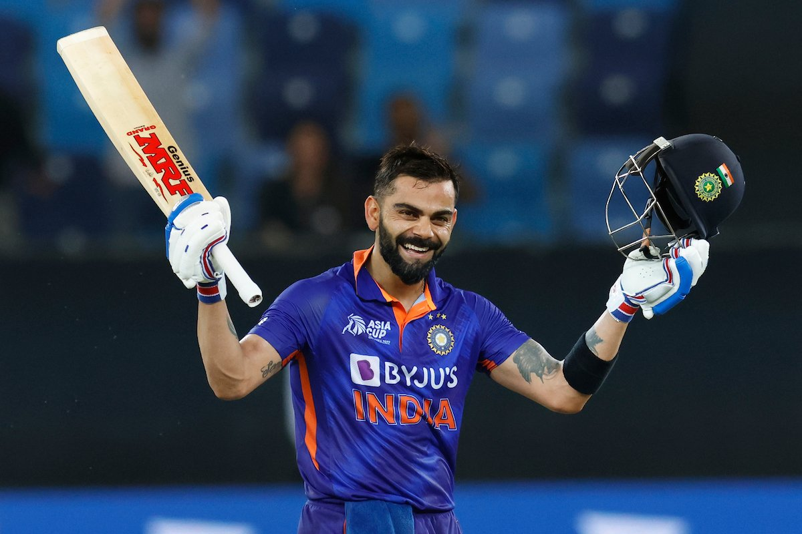

Virat Kohli
The Run Machine

Virat Kohli (born 5 November 1988) is an Indian international cricketer and the former captain of the Indian national cricket team who plays as a right-handed batsman for Royal Challengers Bangalore in the IPL and for the Delhi in Indian domestic cricket. Widely regarded as one of the greatest batsmen of all time,[4] Kohli holds the records for scoring most runs in T20 internationals and in the IPL. In 2020, the International Cricket Council named him the male cricketer of the decade. Kohli has also contributed to a number of India's successes, including winning the 2011 World Cup and the 2013 Champions trophy.
Born and raised in New Delhi, Kohli trained at the West Delhi Cricket Academy and started his youth career with the Delhi Under-15 team. He made his international debut in 2008 and quickly became a key player in the ODI team and later made his Test debut in 2011. In 2013, Kohli reached the number one spot in the ICC rankings for ODI batsmen for the first time. During 2014 T20 World Cup, he set a record for the most runs scored in the tournament. In 2018, he achieved yet another milestone, becoming the world's top-ranked Test batsman, making him the only Indian cricketer to hold the number one spot in all three formats of the game. His form continued in 2019, when he became the first player to score 20,000 international runs in a single decade. In 2021, Kohli made the decision to step down as the captain of the Indian national team for T20Is, following the T20 World Cup and in early 2022 he stepped down as the captain of the Test team as well.
He has received many accolades for his performances on the cricket field. He was recognized as the ICC ODI Player of the Year in 2012 and has won the Sir Garfield Sobers Trophy, given to the ICC Cricketer of the Year, on two occasions, in 2017 and 2018 respectively. Subsequently in 2012, Kohli was the highest run scorer in the 2012 Asia Cup at 357 runs. Kohli also won ICC Test Player of the Year and ICC ODI Player of the Year awards in 2018, becoming the first player to win both awards in the same year. Additionally, he was named the Wisden Leading Cricketer in the World for three consecutive years, from 2016 to 2018. At the national level, Kohli was honoured with the Arjuna Award in 2013, the Padma Shri under the sports category in 2017 and the Rajiv Gandhi Khel Ratna award, India's highest sporting honour, in 2018.
In 2016, he was ranked as one of the world's most famous athletes by ESPN and one of the most valuable athlete brands by Forbes. In 2018, Time magazine included him on its list of the 100 most influential people in the world. In 2020, he was ranked 66th in Forbes list of the top 100 highest-paid athletes in the world for the year 2020 with estimated earnings of over $26 million. Kohli has been deemed one of the most commercially viable cricketers, with estimated earnings of ₹165 crore (US$21 million) in the year 2022..
Records of Virat Kohli
Test records
- Most Wins as captain of India, with 40 wins out of 68 matches .
- Four Test double-hundreds in four consecutive series.
ODI records
- Most ODI centuries while chasing (26).
- Most ODI centuries in India (21).
- Fastest to 8,000 runs(175 innings]9,000 runs(194 innings)10,000 runs(205 innings)11,000 runs(222 innings)12,000 runs(242 innings).
T20I records
- Most runs in T20 internationals - 4,008 runs.
- Most Fifty plus scores in the career - 38 (including 37 fifties and 1 century).
- Highest career batting average in T20I - 52.73.
- Fastest to - 3,000 runs(81 innings)3,500 runs(96 innings).
- Most player of the match(15 times) and player of the series awards(7 times).
IPL records
- Most runs in Indian Premiere League - 6,624 runs.
- Most runs in a single edition of IPL - 973 runs (2016).
- Only player to be involved in three double-century plus stands , two times with AB de Villiers and once with Chris Gayle.
- Fastest to - 5,000 runs(165 innings)[337] 6,000 runs (188 innings).
- Most runs against Delhi Capitals(925).[
- Most hundreds in a season (4).